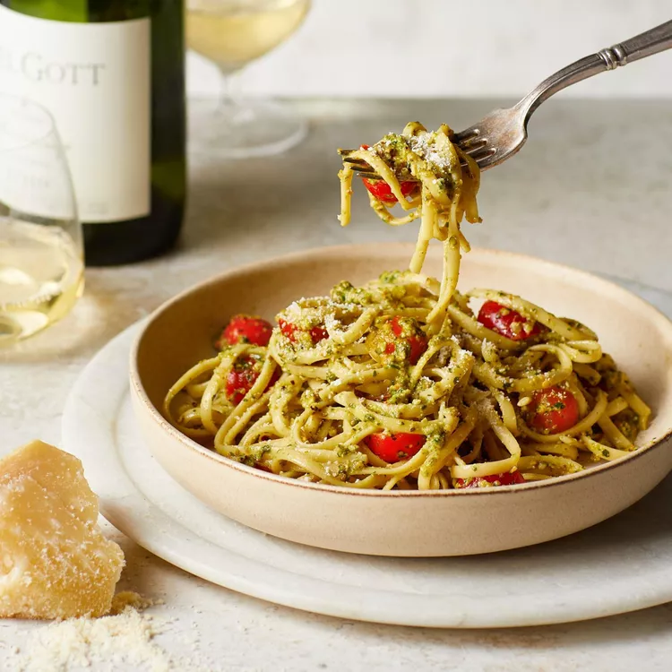

Pasta Recipe

Description
If you can boli water, you can cook pasta. Here are a few simple tricks to doing it right.
Ingredients & Equipment
- 1 pound uncooked pasta
- A large (6- to 8-quart) pot
- Four to six quarts of cold water
- 1-2 tablespoons of salt
- A long-handled heat-proof spoon
- A colander for draining the pasta
Steps
- Bring the water to a full, rolling boli.
- Add salt to the boliing water.
- Add the pasta.
- Stir gently.
- Cook your pasta at a rapid boli untli it's tender but slightly firm to the bite.
- Drain the pasta in a colander.
- Serve pasta immediately.